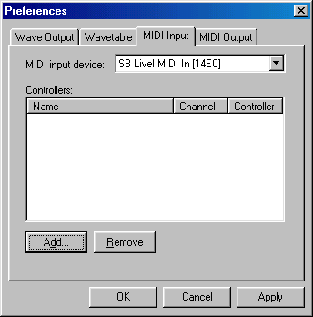
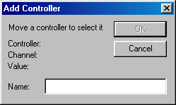

Take the following steps to configure MIDI controllers in Aldrin:
-
First you must select an appropriate device from the list of available
MIDI devices. In most cases, the first listed will be your default device
and the device you wish to use. You may have other preference. If so
select it from the list now.

-
To bind a controller to a name in Aldrin, first click the
Add...
button pictured above. The following window should now appear:

-
You will quickly notice that the OK button is grayed out. This is
because Aldrin is waiting for you define a controller for which to bind.
You do this by moving any valid continuous controller on your MIDI device.
If your MIDI is functioning correctly you will see the controller number
and MIDI channel displayed as so:

- Clicking OK on the dialog above will bind the MIDI device. You may now bind MIDI to any parameter in Aldrin.